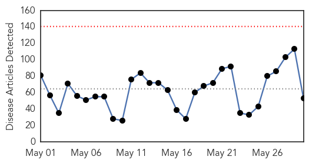
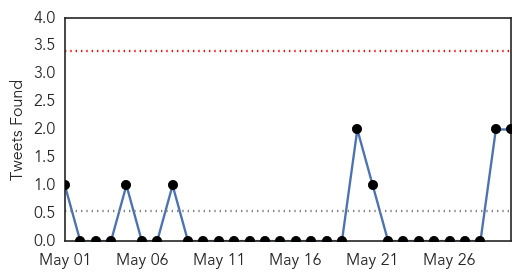
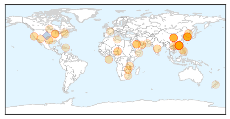
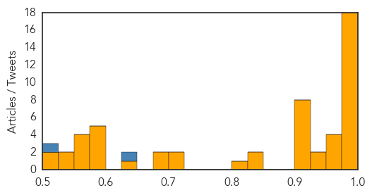
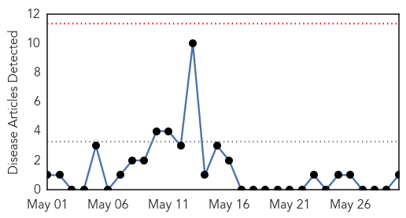
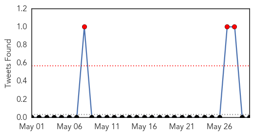
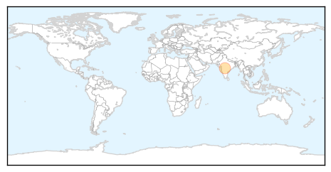

Unknown
30-Day Web Trend
0 alerts, 0 warnings

30-Day Twitter Trend
0 alerts, 0 warnings

Article Locations
Article Confidences
Top Articles:
- 0.999
- South Korea Struggles To Contain Deadly MERS Virus' Spread
- 0.998
- South Korea Struggles To Contain Deadly MERS Virus' Spread
- 0.997
- South Korea's MERS Outbreak Report: 10 New Cases Confirmed
- 0.997
- (2nd LD) S. Korea reports additional MERS case, total rises to 13
- 0.996
- MERS fears grow as 13th case confirmed
- 0.994
- S. Korea confirms 12 MERS cases, including man who traveled to Hong Kong
- 0.994
- (EDITORIAL from Korea JoongAng Daily on May 30)
- 0.994
- (EDITORIAL from Korea JoongAng Daily on May 30)
- 0.993
- At Least a Dozen Quarantined as a Precaution against MERS
- 0.991
- Five new MERS cases reported in South Korea, number of patients rises to 12
- 0.985
- The World On Arirang
- 0.984
- Sub-anchor: No cure or vaccine for MERS, prevention is key
- 0.983
- China Reports First MERS Case in Guangdong
- 0.982
- Number of contacts with China's first MERS patient rises to 47
- 0.982
- Two people refuse to go into MERS quarantine
- 0.982
- MERS-infected S.Koreans rise to 9 in 9 days after first case
- 0.978
- Beware of ticks; two tested for Lyme disease in Rowan
- 0.977
- KBS World Radio
- 0.974
- How to protect yourself against MERS
- 0.965
- Case of TB confirmed in Whitfield
- 0.961
- Number of MERS-infected South Koreans rises to 12 - Xinhua
- 0.957
- Punish travellers who lie about their health, Sars expert urges
- 0.945
- Gulf Daily News World News South Korea confirms 12 Mers cases
- 0.943
- KBS World Radio
- 0.917
- Chicago Tribune
- 0.917
- Chicago Tribune
- 0.917
- Chicago Tribune
- 0.917
- Chicago Tribune
- 0.917
- Chicago Tribune
- 0.917
- Chicago Tribune
- 0.917
- Chicago Tribune
- 0.905
- Crossover: Hong Kong on high alert over MERS
- 0.847
- China confirms first case of deadly virus
- 0.832
- South Korean Man, China’s first confirmed case of MERS
- 0.818
- Ticking time-bomb in Malawi health sectorThe Nation Online
- 0.723
- Health Ministry bans smoking in public and private hospitals
- 0.706
- Officials confirm first MERS case in China
- 0.680
- Observer
- 0.676
- Manitobans with Lyme disease call for better testing in Canada
- 0.648
- Anthrax risk for 75 scientists in US
- 0.597
- Heatwave cases pour in at Hyderabad hospitals
- 0.594
- Vt. Monitoring Syphilis Cases After National Increases
- 0.576
- Silk Road website founder jailed for life
- 0.576
- Sarkozy boosted by support for new 'Républicains' party
- 0.576
- Nigeria’s Maiduguri hit by deadly bombing, overnight attack
- 0.569
- Islamists blamed in deadly Benghazi rocket attack
- 0.568
- The Caledonian-Record
- 0.563
- Exclusive: Gen John Allen, US envoy to the anti-IS coalition
- 0.556
- Djibouti's uncanny mix of French baguettes, Somali tea and bustling business
- 0.541
- US calls for ‘immediate halt’ to China island-building
Showing top 50 articles...
Top Tweets:
- 0.748
- «¡Qué salga ya!» —Palabras en la mente de Alejandra.
- 0.687
- KSA MoH reports 4 new MERS cases & 3 deaths today. Total reported cases in May is 33 case w/ 17 deaths. (CFR >50%) http://t.co/l4pkNjwdVS
- 0.640
- This virus has tended to spread well in healthcare settings when infection control measures are insufficient.
- 0.586
- npr News: South Korea Struggles To Contain Deadly MERS Virus Spread http://t.co/rVt8ukwlTq
- 0.570
- RT: South Korea Struggles To Contain Deadly MERS Virus' Spread http://t.co/wGa3vhkeo7
- 0.511
- Correction: prob 1 case not due to 1st patient. But this does not indicate that virus mutated or can spread widely.
Swine Flu
30-Day Web Trend
0 alerts, 0 warnings

30-Day Twitter Trend
3 alerts, 0 warnings

Article Locations
Article Confidences

Top Articles:
Top Tweets:
-
No tweets found for May 30, 2015